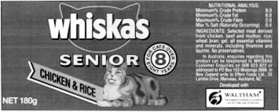

A Blending Problem¶
Problem Description¶
Whiskas cat food, shown above, is manufactured by Uncle Ben’s. Uncle Ben’s want to produce their cat food products as cheaply as possible while ensuring they meet the stated nutritional analysis requirements shown on the cans. Thus they want to vary the quantities of each ingredient used (the main ingredients being chicken, beef, mutton, rice, wheat and gel) while still meeting their nutritional standards.

The costs of the chicken, beef, and mutton are $0.013, $0.008 and $0.010 respectively, while the costs of the rice, wheat and gel are $0.002, $0.005 and $0.001 respectively. (All costs are per gram.) For this exercise we will ignore the vitamin and mineral ingredients. (Any costs for these are likely to be very small anyway.)
Each ingredient contributes to the total weight of protein, fat, fibre and salt in the final product. The contributions (in grams) per gram of ingredient are given in the table below.
Stuff
Protein
Fat
Fibre
Salt
Chicken
0.100
0.080
0.001
0.002
Beef
0.200
0.100
0.005
0.005
Mutton
0.150
0.110
0.003
0.007
Rice
0.000
0.010
0.100
0.002
Wheat bran
0.040
0.010
0.150
0.008
Gel
0.000
0.000
0.000
0.000
Simplified Formulation¶
First we will consider a simplified problem to build a simple Python model.
Identify the Decision Variables¶
Assume Whiskas want to make their cat food out of just two ingredients: Chicken and Beef. We will first define our decision variables:
The limitations on these variables (greater than zero) must be noted but for the Python implementation, they are not entered or listed separately or with the other constraints.
Formulate the Objective Function¶
The objective function becomes:
The Constraints¶
The constraints on the variables are that they must sum to 100 and that the nutritional requirements are met:
Solution to Simplified Problem¶
To obtain the solution to this Linear Program, we can write a short program in Python to call PuLP’s modelling functions, which will then call a solver. This will explain step-by-step how to write this Python program. It is suggested that you repeat the exercise yourself. The code for this example is found in WhiskasModel1.py
The start of the your file should then be headed with a short commenting section outlining the purpose of the program. For example:
"""
The Simplified Whiskas Model Python Formulation for the PuLP Modeller
Authors: Antony Phillips, Dr Stuart Mitchell 2007
"""
Then you will import PuLP’s functions for use in your code:
# Import PuLP modeler functions
from pulp import *
A variable called prob (although its name is not important) is
created using the LpProblem function. It has two parameters, the first
being the arbitrary name of this problem (as a string), and the second
parameter being either LpMinimize or LpMaximize depending on the
type of LP you are trying to solve:
# Create the 'prob' variable to contain the problem data
prob = LpProblem("The Whiskas Problem", LpMinimize)
The problem variables x1 and x2 are created using the
LpVariable class. It has four parameters, the first is the
arbitrary name of what this variable represents, the second is the lower
bound on this variable, the third is the upper bound, and the fourth
is essentially the type of data (discrete or continuous). The options
for the fourth parameter are LpContinuous or LpInteger, with the
default as LpContinuous. If we were modelling the number of cans
to produce, we would need to input LpInteger since it is discrete
data. The bounds can be entered directly as a number, or None to
represent no bound (i.e. positive or negative infinity), with None
as the default. If the first few parameters are entered and the rest
are ignored (as shown), they take their default values. However, if you
wish to specify the third parameter, but you want the second to be the
default value, you will need to specifically set the second parameter as
it’s default value. i.e you cannot leave a parameter entry blank.
e.g:
LpVariable("example", None, 100)
or:
LpVariable("example", upBound = 100)
To explicitly create the two variables needed for this problem:
# The 2 variables Beef and Chicken are created with a lower limit of zero
x1 = LpVariable("ChickenPercent", 0, None, LpInteger)
x2 = LpVariable("BeefPercent", 0)
The variable prob now begins collecting problem data with the
+= operator. The objective function is logically entered first, with
an important comma , at the end of the statement and a short string
explaining what this objective function is:
# The objective function is added to 'prob' first
prob += 0.013 * x1 + 0.008 * x2, "Total Cost of Ingredients per can"
The constraints are now entered (Note: any “non-negative”
constraints were already included when defining the variables). This is
done with the ‘+=’ operator again, since we are adding more data to the
prob variable. The constraint is logically entered after this, with a
comma at the end of the constraint equation and a brief description of
the cause of that constraint:
# The five constraints are entered
prob += x1 + x2 == 100, "PercentagesSum"
prob += 0.100 * x1 + 0.200 * x2 >= 8.0, "ProteinRequirement"
prob += 0.080 * x1 + 0.100 * x2 >= 6.0, "FatRequirement"
prob += 0.001 * x1 + 0.005 * x2 <= 2.0, "FibreRequirement"
prob += 0.002 * x1 + 0.005 * x2 <= 0.4, "SaltRequirement"
Now that all the problem data is entered, the writeLP() function
can be used to copy this information into a .lp file into the directory
that your code-block is running from. Once your code runs successfully, you
can open this .lp file with a text editor to see what the above steps were
doing. You will notice that there is no assignment operator (such as an
equals sign) on this line. This is because the function/method called
writeLP() is being performed to the
variable/object prob (and the
string "WhiskasModel.lp" is an additional parameter). The dot .
between the variable/object and the function/method is important and is
seen frequently in Object Oriented software (such as this):
# The problem data is written to an .lp file
prob.writeLP("WhiskasModel.lp")
The LP is solved using the solver that PuLP chooses. The input
brackets after solve() are left empty in this case, however they can be
used to specify which solver to use (e.g prob.solve(CPLEX()) ):
# The problem is solved using PuLP's choice of Solver
prob.solve()
Now the results of the solver call can be displayed as output to
us. Firstly, we request the status of the solution, which can be one of
“Not Solved”, “Infeasible”, “Unbounded”, “Undefined” or “Optimal”. The
value of prob (pulp.pulp.LpProblem.status) is returned as an integer, which must be converted
to its significant text meaning using the
LpStatus dictionary. Since
LpStatus is a dictionary(dict), its input must be in square brackets:
# The status of the solution is printed to the screen
print("Status:", LpStatus[prob.status])
The variables and their resolved optimum values can now be printed to the screen.
# Each of the variables is printed with it's resolved optimum value
for v in prob.variables():
print(v.name, "=", v.varValue)
The for loop makes variable cycle through all
the problem variable names (in this case just ChickenPercent and
BeefPercent). Then it prints each variable name, followed by an
equals sign, followed by its optimum value.
name and
varValue are
properties of the object variable.
The optimised objective function value is printed to the screen,
using the value function. This ensures that the number is in the right
format to be displayed. objective is an attribute of the object
prob:
# The optimised objective function value is printed to the screen
print("Total Cost of Ingredients per can = ", value(prob.objective))
Running this file should then produce the output to show that Chicken will make up 33.33%, Beef will make up 66.67% and the Total cost of ingredients per can is 96 cents.
Full Formulation¶
Now we will formulate the problem fully with all the variables. Whilst it could be implemented into Python with little addition to our method above, we will look at a better way which does not mix the problem data, and the formulation as much. This will make it easier to change any problem data for other tests. We will start the same way by algebraically defining the problem:
Identify the Decision Variables For the Whiskas Cat Food Problem the decision variables are the percentages of the different ingredients we include in the can. Since the can is 100g, these percentages also represent the amount in g of each ingredient included. We must formally define our decision variables, being sure to state the units we are using.
\[\begin{split}x_1 &= \text{percentage of chicken meat in a can of cat food}\\ x_2 &= \text{percentage of beef used in a can of cat food}\\ x_3 &= \text{percentage of mutton used in a can of cat food}\\ x_4 &= \text{percentage of rice used in a can of cat food}\\ x_5 &= \text{percentage of wheat bran used in a can of cat food}\\ x_6 &= \text{percentage of gel used in a can of cat food}\end{split}\]Note that these percentages must be between 0 and 100.
Formulate the Objective Function For the Whiskas Cat Food Problem the objective is to minimise the total cost of ingredients per can of cat food. We know the cost per g of each ingredient. We decide the percentage of each ingredient in the can, so we must divide by 100 and multiply by the weight of the can in g. This will give us the weight in g of each ingredient:
\[\min \$0.013 x_1 + \$0.008 x_2 + \$0.010 x_3 + \$0.002 x_4 + \$0.005 x_5 + \$0.001 x_6\]Formulate the Constraints The constraints for the Whiskas Cat Food Problem are that:
The sum of the percentages must make up the whole can (= 100%).
The stated nutritional analysis requirements are met.
The constraint for the “whole can” is:
\[x_1 + x_2 + x_3 + x_4 + x_5 +x _6 = 100\]To meet the nutritional analysis requirements, we need to have at least 8g of Protein per 100g, 6g of fat, but no more than 2g of fibre and 0.4g of salt. To formulate these constraints we make use of the previous table of contributions from each ingredient. This allows us to formulate the following constraints on the total contributions of protein, fat, fibre and salt from the ingredients:
\[\begin{split}0.100 x_1 +0.200 x_2 +0.150 x_3 +0.000 x_4 +0.040 x_5 +0.0 x_6 0&\ge 8.0 \\ 0.080 x_1 +0.100 x_2 +0.110 x_3 +0.010 x_4 +0.010 x_5 0+0.0 x_6 &\ge 6.0 \\ 0.001 x_1 +0.005 x_2 +0.003 x_3 +0.100 x_4 0+0.150 x_5 +0.0 x_6 &\le 2.0 \\ 0.002 x_1 +0.005 x_2 +0.007 x_3 0+0.002 x_4 +0.008 x_5 +0.0 x_6 &\le 0.4\end{split}\]
Solution to Full Problem¶
To obtain the solution to this Linear Program, we again write a short program in Python to call PuLP’s modelling functions, which will then call a solver. This will explain step-by-step how to write this Python program with it’s improvement to the above model. It is suggested that you repeat the exercise yourself. The code for this example is found in the WhiskasModel2.py
As with last time, it is advisable to head your file with commenting on its purpose, and the author name and date. Importing of the PuLP functions is also done in the same way:
"""
The Full Whiskas Model Python Formulation for the PuLP Modeller
Authors: Antony Phillips, Dr Stuart Mitchell 2007
"""
# Import PuLP modeler functions
from pulp import *
Next, before the prob variable or type of problem are defined,
the key problem data is entered into dictionaries. This includes the
list of Ingredients, followed by the cost of each Ingredient, and it’s
percentage of each of the four nutrients. These values are clearly laid
out and could easily be changed by someone with little knowledge of
programming. The ingredients are the reference keys, with the numbers as
the data.
# Creates a list of the Ingredients
Ingredients = ["CHICKEN", "BEEF", "MUTTON", "RICE", "WHEAT", "GEL"]
# A dictionary of the costs of each of the Ingredients is created
costs = {
"CHICKEN": 0.013,
"BEEF": 0.008,
"MUTTON": 0.010,
"RICE": 0.002,
"WHEAT": 0.005,
"GEL": 0.001,
}
# A dictionary of the protein percent in each of the Ingredients is created
proteinPercent = {
"CHICKEN": 0.100,
"BEEF": 0.200,
"MUTTON": 0.150,
"RICE": 0.000,
"WHEAT": 0.040,
"GEL": 0.000,
}
# A dictionary of the fat percent in each of the Ingredients is created
fatPercent = {
"CHICKEN": 0.080,
"BEEF": 0.100,
"MUTTON": 0.110,
"RICE": 0.010,
"WHEAT": 0.010,
"GEL": 0.000,
}
# A dictionary of the fibre percent in each of the Ingredients is created
fibrePercent = {
"CHICKEN": 0.001,
"BEEF": 0.005,
"MUTTON": 0.003,
"RICE": 0.100,
"WHEAT": 0.150,
"GEL": 0.000,
}
The prob variable is created to contain the formulation, and the
usual parameters are passed into LpProblem.
# A dictionary of the salt percent in each of the Ingredients is created
saltPercent = {
A dictionary called ingredient_vars is created which contains
the LP variables, with their defined lower bound of zero. The reference
keys to the dictionary are the Ingredient names, and the data is
Ingr_IngredientName. (e.g. MUTTON: Ingr_MUTTON)
"BEEF": 0.005,
"MUTTON": 0.007,
Since costs and ingredient_vars are now dictionaries with the
reference keys as the Ingredient names, the data can be simply extracted
with a list comprehension as shown. The lpSum() function will add the
elements of the resulting list. Thus the objective function is simply
entered and assigned a name:
"WHEAT": 0.008,
"GEL": 0.000,
Further list comprehensions are used to define the other 5 constraints, which are also each given names describing them.
# Create the 'prob' variable to contain the problem data
prob = LpProblem("The Whiskas Problem", LpMinimize)
# A dictionary called 'ingredient_vars' is created to contain the referenced Variables
ingredient_vars = LpVariable.dicts("Ingr", Ingredients, 0)
Following this, the writeLP line etc follow exactly the same as in the simplified example.
The optimal solution is 60% Beef and 40% Gel leading to a objective Function value of 52 cents per can.